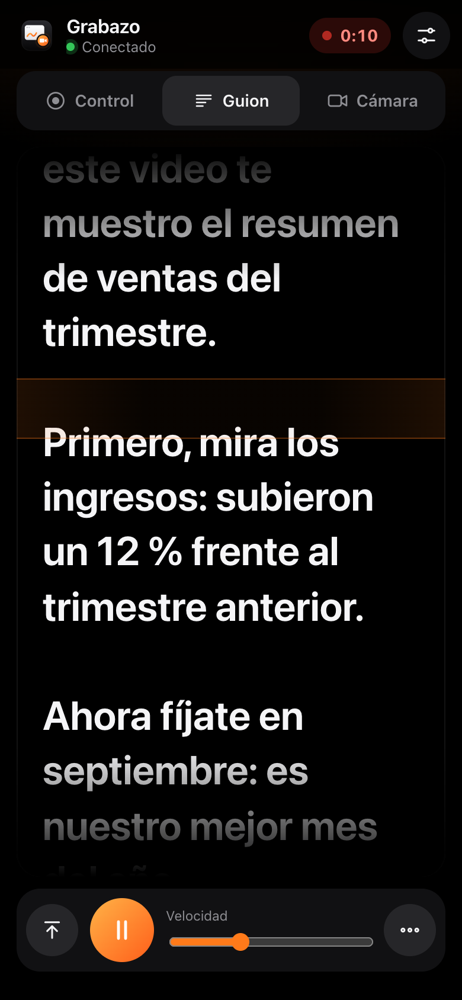
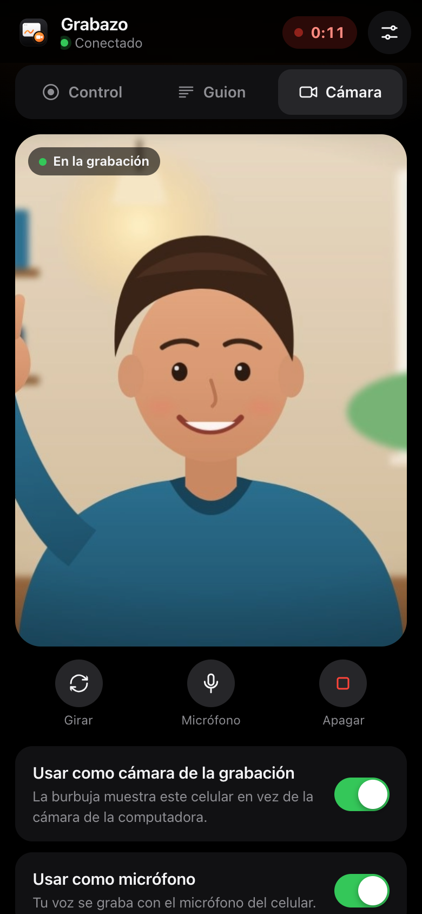

Lee tu guion y graba con la cámara del celular
El texto avanza solo al grabar. Y la cámara de tu celular puede ser la burbuja de la grabación, con fondos y desenfoque.


Guion con desplazamiento automático
Su cámara en la burbuja